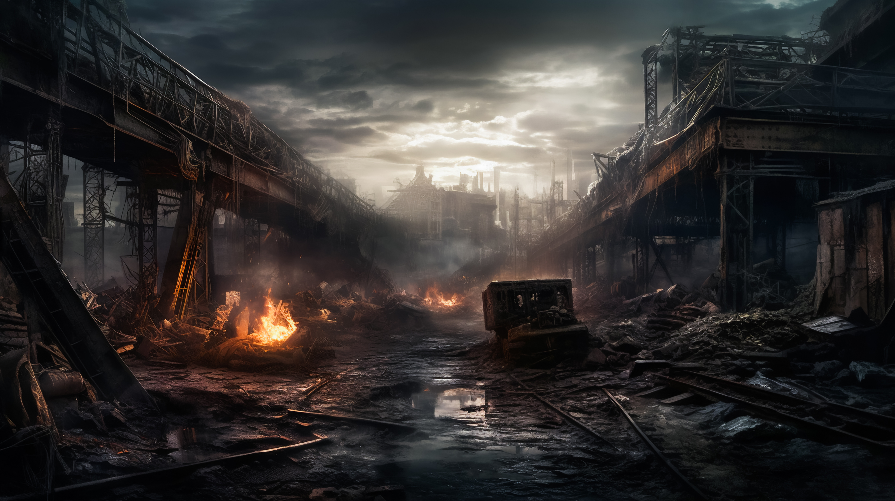

1 / 3
Temporal Paradox : A captivating and mind-bending space exploration game. You awaken trapped on a unknown space vessel, travelling into the vast galaxy, you are heading towards the unknown and must figure out how to escape before time runs out.
2 / 3

Aeon Inferno : Intense, gripping, survival fantasy, you are stuck in a world consumed by unending flames. In the aftermath of a cataclysmic event you must do everything you can to survive a relentless world. Aeon Inferno is an survival exploration game, featuring item management, deadly enemies and an ever adapting world.
3 / 3

Ghosts of Progress : As Detective Eliiot Walls, you were born into a dystopian metropolis, you had thought you had seen it all, but a recent event has made things a lot more personal, it is your goal to unravel the mystery before it is too late. Ghosts of Progress is a noir and sci-fi thriller, you will be tasked with making life or death decisions where everything you do can change the outcome.